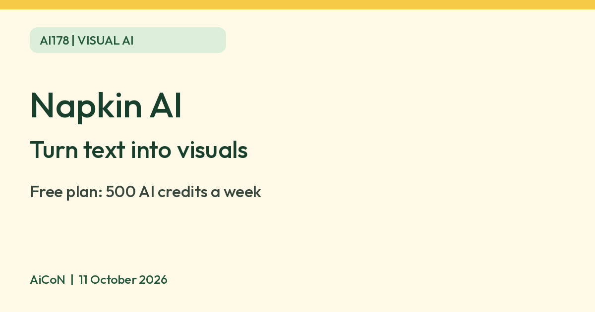

Napkin AI: turn text into visuals, free plan has 500 credits a week
Napkin AI turns text into visuals. Its free plan gives 500 AI credits a week, about 1 credit per word selected, and free visuals carry Napkin branding.

What it is
Napkin AI turns text into visuals. According to Napkin's pricing page, you select text and the tool generates visuals from it, and you can then edit the styles, text and icons. Napkin's help pages say it also makes slides. You can import files such as PPT, DOC, PDF, HTML and MD, and export your visuals as PNG or PDF.
Is it free
Yes. Napkin's pricing page lists a Free plan, "Forever". It includes 500 AI credits per week. Napkin says AI credits are used to generate visuals, with about 1 credit charged per word selected, so approximately 500 selected words if only that generation cost applies, not a guaranteed word allowance. Napkin adds that this may change for more complex outputs. Free credits refresh weekly; check your balance and next refresh in Account Settings or Teamspace subscription settings. Editing text, colors, fonts or elements directly does not use credits, and visual editing, file import and PNG and PDF export are unlimited on the Free plan. Visuals made on the Free plan carry Napkin branding. The Plus and Pro plans are priced per person per month in US dollars. We did not verify an Indian checkout total, so no paid price is quoted here. Its pricing FAQ says upgrades charge immediately on a prorated basis and added paid Teamspace members create seat charges; cancellation keeps paid features until the current period ends. Free PNG/PDF export should not be confused with paid PPT/SVG export. Check the plan, billing period, renewal and refund terms before paying.
Is it available in India
We could not confirm this. Napkin's pages do not list countries. Its pricing page says it accepts major credit and debit cards across the world.
How to try it
- Sign up for the free plan at napkin.ai.
- Paste or write your text, select a passage and generate a visual.
- Edit the result and export it as PNG or PDF.
Limits to know
- By default your content may be used in an anonymized form to help improve Napkin's AI. Napkin says you can opt out in Account Settings under Data Privacy by turning off "Use my content for product improvements". A Teamspace administrator manages the equivalent setting for that Teamspace; do not assume an individual switch overrides team policy. Opt-out is not a promise of no processing or storage. The pricing page says information used for functionality is shared with AI subprocessors, under agreements prohibiting their model training.
- The current credits help page says visuals, slides, images, Effects and Napkin chat requests use credits; manual edits do not. It does not give a fixed Effects charge, so check the app before using a large share of your allowance.
- Check the Share panel before you add sensitive content to shared presentations, as Napkin advises.
- We did not test it ourselves.
Frequently asked questions
Is Napkin AI free?
Yes. Napkin's Free plan includes 500 AI credits a week, about 1 credit per word selected. Free visuals carry Napkin branding.
Sources: Napkin pricing, AI credits help, Privacy and data help. Checked 11 October 2026.